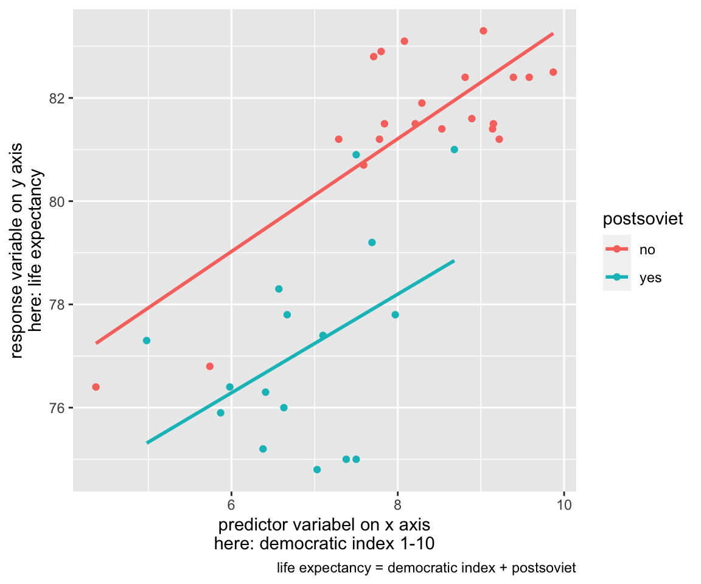

library(tidyverse)
library(patchwork)
library(here)
countries <- read.csv(here("data", "countries.csv"))
The goals for this lecture are (1) understanding the concept of multiple linear regression with emphasis on interpretation of its coefficients, and (2) building and interpreting multiple regression models in R. We will also discuss coding categorical predictors as dummy variables and using interaction.
Introduction to multiple linear regression
Multiple linear regression (MLR) is defined by having more than one predictor term. Remember the general formula for simple linear regression:
\[
y = \alpha + \beta*x + \epsilon_i
\]
The formula for MLR is its fairly straightforward extension. Notice that intercept in MLR is usually called \(\beta_0\) rather than \(\alpha\). The other regression coefficients are numbered betas. The numbered x-es stand for predictor terms.
\[
y = \beta_0 + \beta_1*x_1 + + \beta_2*x_2 + ... + \epsilon_i
\]
Note that having more predictor terms does not necessarily imply using more predictor variables. For example, the blue line in the following figure represents linear model estimated using three predictor terms: democratic index, democratic index to the power of two (quadratic term), and democratic index to the power of three (cubic term). While the model only uses one predictor variable, there are three predictor terms which makes the model a case of MLR. For this model, four betas would be estimated (one of them the intercept).
One of the (many?) common misconceptions about linear regression is that it can only estimate a straight line. That is only true for simple linear regression. From the picture above, it should be clear that in MLR, it is possible to “bend” the line. And not only that.
Another example of a MLR model is visualized on the figure below. It uses two predictor terms (in this case, they are two distinct independent variables): again, the democratic index, and, in addition, a binary variable whether the country is post-soviet or not. Due to the fact that one of the independent variables is binary, it is possible to visualize the whole model in one two-dimensional figure as two lines. However, more complicated MLR models cannot be meaningfully visualized on top of the raw data like this. What we can do is visualize their results (apart from displaying them as numbers in a table). We will discuss later how it is done, but we should first make clear how the beta coefficients are interpreted in MLR.

Interpreting coefficients in MLR
First, let’s run a model where life expectancy is explained with democratic index and percentage of people with university education in 15-64 age category (that is how the variable is defined).
fit1 <- lm(life_exp ~ dem_index + uni_prc, data = countries)
summary (fit1)
##
## Call:
## lm(formula = life_exp ~ dem_index + uni_prc, data = countries)
##
## Residuals:
## Min 1Q Median 3Q Max
## -4.1640 -0.9798 -0.0910 1.4256 3.1522
##
## Coefficients:
## Estimate Std. Error t value Pr(>|t|)
## (Intercept) 66.300 2.210 30.003 < 2e-16 ***
## dem_index 1.786 0.415 4.303 0.000149 ***
## uni_prc -1.460 6.548 -0.223 0.824979
## ---
## Signif. codes: 0 '***' 0.001 '**' 0.01 '*' 0.05 '.' 0.1 ' ' 1
##
## Residual standard error: 1.949 on 32 degrees of freedom
## (3 observations deleted due to missingness)
## Multiple R-squared: 0.5517, Adjusted R-squared: 0.5237
## F-statistic: 19.69 on 2 and 32 DF, p-value: 2.664e-06
The output in the frame with white background above is the raw summary output which appears in R console as response to running the two lines of code. The beta coefficients are in the column called “Estimate.” Specifically, the coefficient for democratic index is 1.786, and the coefficient for university education is -1.460.
Interpreting coefficients in MLR can be surprisingly tricky as they are, “in part, contingent on the other variables in the model” (Gelman et al., 2020, p. 131). This means that they will change when other variables are added to the model or dropped from the model.
We will cite Gelman et al. (2020) on how best to interpret them: “The coefficient \(\beta_k\) is the average or expected difference in outcome \(y_k\), comparing two people who differ by one unit in the predictor \(x_k\) while being equal in all the other predictors. This is sometimes stated in shorthand as comparing two people (or, more generally, two observational units) that differ in \(x_k\) with all the other predictors held constant” (p. 131). We also call this conditional effect.
For the example above, we could say that if one country has democratic index higher by one point than another country, and they both have the same percentage of university educated people, the first country will have life expectancy higher by 1.8 years (i.e., rounding 1.786), on average.
Since the coefficient for percentage of university educated people has very broad confidence interval, we could also say that we find no evidence in the data, that two countries with the same level of democratic index should be expected to differ in life expectancy when they have different proportion of university educated people. That is if we believe the sample of countries justifies some generalization to some concrete or at least abstract population of countries. Someone could be tempted to make a purely descriptive interpretation with no ambition to make sample-to-population inference. He or she could try to say something along the lines that for our particular sample of countries and data from given years, we find that for two countries with the same level democratic index the life expectancy goes down by 1.5 years, on average, as the proportion of university educated increases from 0 to 100% (the variable is measured on scale from 0 to 1). This seems to us a meaningless statement and we would discourage from it, even if technically true. The really large standard errors should warn us against making interpretation even in purely descriptive situations. Saying that controlling for democratic index, there does not seem to be any association between life expectancy and proportion of university educated in our sample of countries seems much more sensible.
Within descriptive modeling strategies, we use MLR to see the effects of individual variables net of the effects of all the other variables in the model. Within predictive modeling, we use MLR to improve our predictions over simple linear model (predictions based on just one predictor term often tend to be weak in social sciences). Within explanatory modeling, we use MLR for adjusting for background variables, hence discovering potentially spurious relationships.
Difference-based vs. change-based interpretations
There two conceptually slightly different interpretations of MLR coefficients. The difference-based interpretation is well described as “how the outcome variable differs, on average, when comparing two groups of items that differ by 1 in the relevant predictor while being identical in all the other predictors” (Gelman et al., 2020, p. 134). The change-based interpretation is well described by saying that “the coefficient is the expected change in y caused by adding 1 to the relevant predictor, while leaving all the other predictors in the model unchanged” (Gelman et al., 2020, p. 134).
In others words, the difference-based interpretation uses the idea of difference between individuals, whereas the change-based interpretation uses the idea of change within individual. To be on the save side, we recommend interpreting regression coefficients as comparisons between units, not (potential) changes within units, unless one specifically claims causality. The difference-based interpretation is simply more general, hence carries less risk of being used in a misleading way.
Note that (Gelman et al., 2020) use the term “predictive interpretation” instead of difference-based interpretation and “counterfactual” interpretation instead of change-based interpretation.
Comparing beta coefficients of different predictors
It can be sometimes useful to compare coefficients of different independent variables in the model. As we saw in the model above, it cannot be done in a straightforward way. While values of 1.786 and 1.460 are not very far from each other, it makes no sense to compare them. The first shows change when two countries differ in democratic index (measured on the scale from 0 to 10) by one (a realistic situation), whereas the latter shows change when one country has no university educated people and the other has only university educated people (a very unrealistic situation). Indeed, the coefficient value depends on the unit we use for measuring the independent variable.
To deal with this issues of no comparability, we can use so called standardized betas. Those can be used to determine relative weight of independent variables as they show the effect of an increase in X by one standard deviation on Y, also measured in standard deviations. The way to calculate standardized betas is to first standardize (compute z-scores) all variables used in the model and then run a regression on the z-scores.
A way to do this using the scale function is shown in the code below.
fit2 <- lm(scale(life_exp) ~ scale(dem_index) + scale(uni_prc), data = countries)
summary (fit2)
##
## Call:
## lm(formula = scale(life_exp) ~ scale(dem_index) + scale(uni_prc),
## data = countries)
##
## Residuals:
## Min 1Q Median 3Q Max
## -1.47433 -0.34693 -0.03223 0.50475 1.11609
##
## Coefficients:
## Estimate Std. Error t value Pr(>|t|)
## (Intercept) -0.02280 0.11802 -0.193 0.848054
## scale(dem_index) 0.82340 0.19138 4.303 0.000149 ***
## scale(uni_prc) -0.04001 0.17945 -0.223 0.824979
## ---
## Signif. codes: 0 '***' 0.001 '**' 0.01 '*' 0.05 '.' 0.1 ' ' 1
##
## Residual standard error: 0.6899 on 32 degrees of freedom
## (3 observations deleted due to missingness)
## Multiple R-squared: 0.5517, Adjusted R-squared: 0.5237
## F-statistic: 19.69 on 2 and 32 DF, p-value: 2.664e-06
Now we can compare the relative strengths of our predictors. The democratic index (with standardized beta of 0.82) is a way stronger predictor of life expectancy than the proportion of university educated (0.04 in absolute value as the sign is irrelevant for this comparison). Notice that the values of t-tests for the significance of coefficients did not change. It should come as no surprise, we did not substantively change the data by standardizing it.
Gelman (2008) suggests to use slightly different transformation if we also want include binary predictors (dummy variables) in the model. He shows that standardizing by subtracting the mean and dividing by 2 standard deviations (rather than just 1) enables to directly compare this kind of standardized betas with coefficients for non-standardized binaries.
Main effects and interactions
All the beta coefficients in the examples above were so called main effects. We use this term to distinguish them from interactions which we will introduce in this section. First about the main effects. There are two types of main effects. First, in simple linear regression (with one predictor term), the main effect indicates the bivariate linear association between independent and dependent variable. Second, in MLR, the main effect is the conditional effect described above (i.e., the effect of independent variable on a dependent variable conditional on all other variables in the model being held constant).
Using only the main effects in MLR relies on the assumption that the effect of a given independent variable on the dependent variable is the same across all levels of other independent variables in the model, or more precisely, that rather than looking at different effects of our independent variable of interest for different levels of other independent variables, it is an acceptable simplification to take the average effect.
This is easier explained with an example. Imagine you model the effect of years of education on earnings and you also enter gender into the model (we assume it only takes two values, “man” or “woman.” The equation would like like this: $ earnings = _0 + _1*yearsOfEducation + _2*gender$. The coefficient \(\beta_1\) shows the conditional effect of years of education on income for some hypothetical average gender. This can be an acceptable simplification if the effect is similar for both men and women. But imagine there is strong positive effect of years of education on income for one gender and similarly strong negative effect for the other gender. These effects will cancel out (provided there is about the same number of men an women in the sample) and the \(\beta_1\) will be close to zero. This would be a problematic simplification of the reality - we would lose a potentially important piece of information. To prevent this, we can use interactions.
An interaction enables to show how the effect of one independent variable on the dependent variable varies across levels of another independent variable. In the example above, the equation would look like this: \(income = \beta_0 + \beta_1*yearsOfEducation + \beta_2*gender + \beta_3*yearsOfEducation*gender\). The interpretation of coefficients is prone to errors, caution is advised. The intercept is the value of income for the reference category of gender (say man as R would code them as 0s because, alphabetically, they come before women) with 0 years of education. The coefficient for gender would show the difference for between the predicted income for men in women with no years of education. The coefficient for years of education can be thought of as the comparison of average income for men who differ by one year of education. Finally, the interaction coefficient represents the difference in slope for years of education between men and women.
[TBD - TABLE AND FIGURE TO ILUSTRATE THIS, EXAMPLE OF EQUATION FOR SELECTED INDIVIDUALS]
Model with interaction VS. two separate models
If we are interested in an interaction between two continuous variables, we have no other option than running a model with interaction. However, when we are interested in an interation between one continuous and one binary variable, we could also be tempted to run two separate models, one for men and one for women. This would not be a horrible solution. The estimated effected sizes would be the same. However, we would not be able to calculate the overall fit of the model (we will talk about model fit in one of the next sessions), and we would not have the estimate of standard error of the difference of slopes between men and women. So unlike in the model with interaction, we would not be able to say if the didference in slope between the two genders is statistically significant.
Centering variables in models with interaction
We saw above that some of the interpretations of main effects can be difficult or not very useful when models contain interactions. Indeed, they are estimated with the other independent variables fixed at 0. And the 0 can be very unrealistic such as in case of years of education above.
However, we can use centering for better interpretability of main effects. After doing so, the main effect corresponds to a predictive difference with the other input fixed at its average value. Intercept in the example above would be the average income for a person with mean number of years of education and of “average gender.” Coefficient for years of education would be the average slope for all levels of gender. The interaction would keep the ame interpretation as above (difference of slope between genders).
[TBD - TABLE AND FIGURE TO ILUSTRATE THIS]
Interaction as “it depends effects”
Jim Frost offers in his blog a helpful way to think about interactions as of “it depends effects.” If the answer to the question ‘What is the effect of X on Y?’ is ‘It depends,’ we are dealing with interactions. For example, do you like your food more with ketchup added? It depends, yes, if the food is french fries, no, if the food is ice-cream sundae.
Interactions require big samples
Adding interactions sometimes makes good sense theoretically, and sometimes it also helps achieve good model specification with good fit to the data. However, estimating interactions requires much bigger samples to identify the same effect size as for main effect. And since we can mostly assume that the effect size of interactions will be smaller than that of main effects, we will mostly require MUCH bigger samples. In his blog, Andrew Gelman shows that we will need 16 times the sample size to estimate an interaction which is half the size of the main effect if we want to have the same statistical power. This does not mean that interactions are beyond reach, we can still meaningfully estimate them when their effect size is large enough. But when their effect size is only small, they can be out of reach in common sociological samples. When we look for interactions in explorative analysis, we “typically look for them is with predictors that have large coefficients when not interacted. For a familiar example, smoking is strongly associated with cancer. In epidemiological studies of other carcinogens, it is crucial to adjust for smoking both as an uninteracted predictor and as an interaction, because the strength of association between other risk factors and cancer can depend on whether the individual is a smoker.” (Gelman et al., 2020, p. 136).